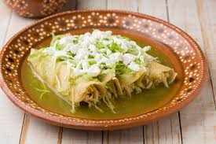

Enchiladas Verdes

Description
Enchiladas Verdes are a delicious Mexican dish made with corn tortillas filled with chicken or cheese, then topped with a tangy green salsa made from tomatillos and cilantro. This dish is comforting and bursting with flavor.
Ingredients
- 12 corn tortillas
- 2 cups cooked chicken, shredded (or cheese for a vegetarian option)
- 2 cups green salsa (salsa verde)
- 1 cup sour cream
- 1 cup shredded cheese (like queso fresco or Monterey Jack)
- 1/4 cup chopped fresh cilantro
- 1 tablespoon vegetable oil
- 1 onion, diced (optional)
- Salt and pepper to taste
Steps
- Preheat your oven to 375°F (190°C).
- Heat the vegetable oil in a skillet over medium heat. If using, sauté the diced onion until translucent.
- Add the shredded chicken (or cheese) to the skillet and mix with half of the green salsa. Season with salt and pepper to taste.
- Lightly warm the corn tortillas in a dry skillet or microwave to make them pliable.
- Spoon the chicken mixture into each tortilla, roll them up, and place them seam-side down in a greased baking dish.
- Pour the remaining green salsa over the enchiladas and sprinkle with shredded cheese.
- Bake for 20-25 minutes, until heated through and the cheese is melted and bubbly.
- Serve hot, drizzled with sour cream and garnished with fresh cilantro.
Return to Home Page